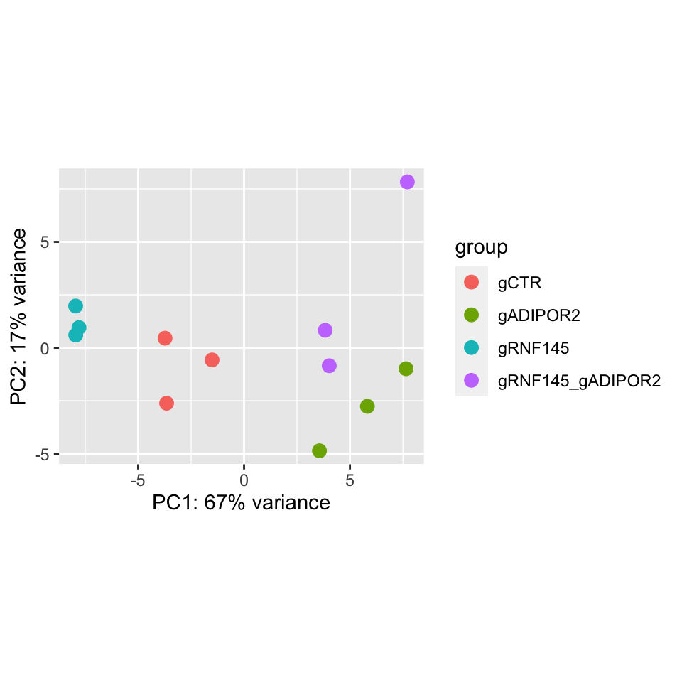
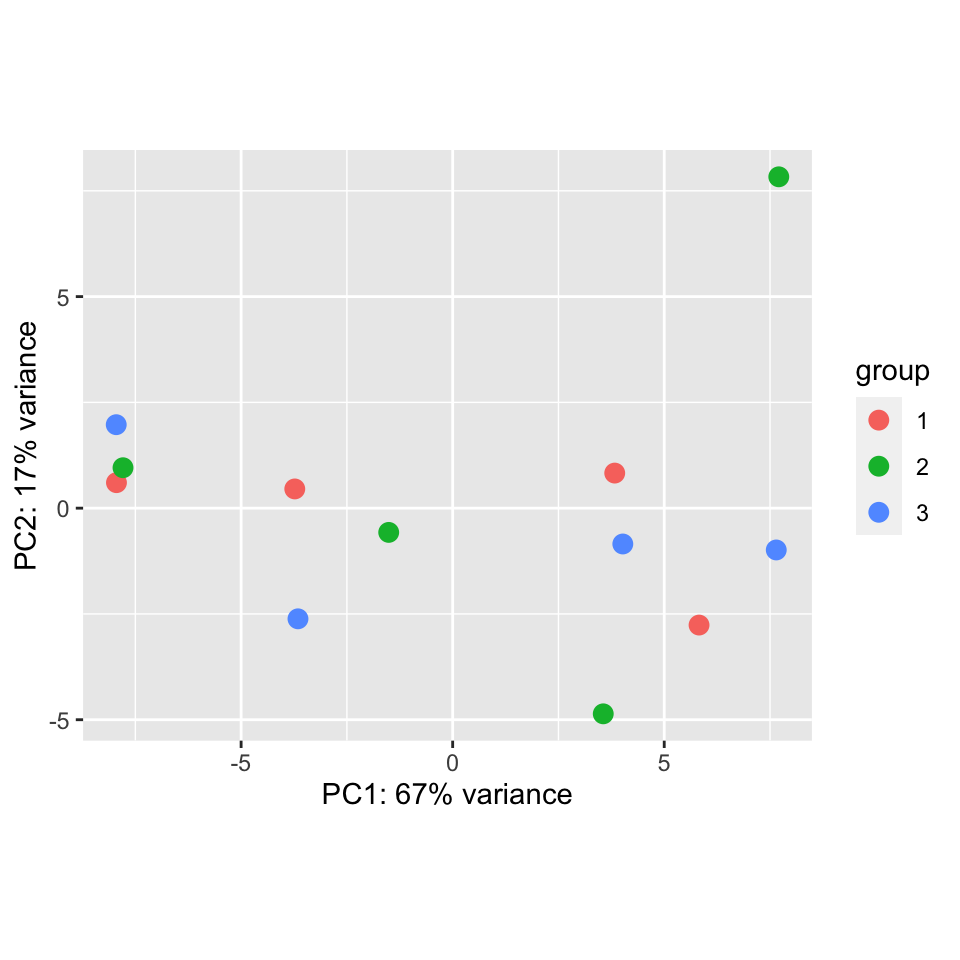
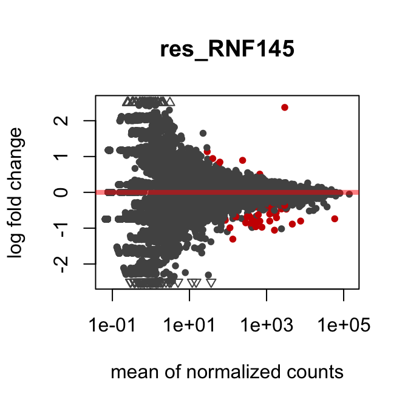
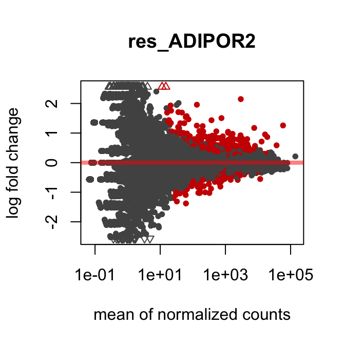
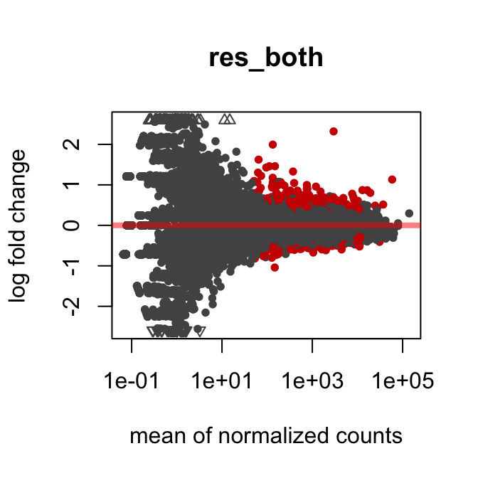

As in the title, analysis performed using DESeq2. I’ve included a video on how to retrieve gene descriptions from BioMart.
Plot PCA plot to find out if there are any batch effects.


BEAUUUUUUUUUTIFUL. No batch effect :-)
This table summarises the total number of up- or down- regulated genes (always in comparison to the control). The adjusted p-value cut-off for significance is 0.05. Notice the massive reduction in the number of genes when the log2FC threshold is increased to 1.
| log2FC±0 | log2FC±1 | |
|---|---|---|
| res_RNF145.up | 9 | 2 |
| res_RNF145.dw | 38 | 2 |
| res_ADIPOR2.up | 333 | 35 |
| res_ADIPOR2.dw | 190 | 13 |
| res_both.up | 327 | 19 |
| res_both.dw | 258 | 1 |
MA plots show the distribution of each feature across log2FC (on the y-axis) and baseMean or mean of normalised counts (on the x-axis), the latter is a measure of roughly how high or low expressed a given gene is. Formally, it is the mean of the counts reported in each condition plotted. The more to the right the more expressed a gene is. Note that very low count genes, found at the left of the plot, are broadly dispearsed and hardly any significant hits are reported here.

Use this links to access the tables of all differentially expressed genes, always filtered for adjuted p-value < 0.05.
Use BioMart. You can see how to here: